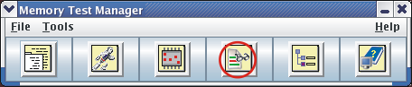
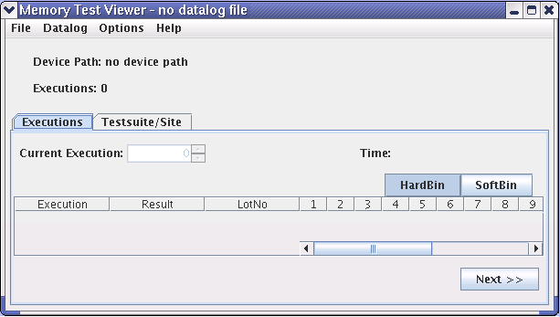

Starting the Memory Test Viewer
You can start the Memory Test Viewer either from SmarTest, or from Memory Test Manager, or use an execution file.
Before you begin
SmarTest must be installed.
The DUT must have been set up and there must be a valid map converter library.
Procedure
-
In the menu bar of SmarTest, click .
Alternatively, you can:
- In the toolbar of SmarTest, click the Memory Test button and choose Memory Test
Viewer, see the below picture:

Or,
- Click the Memory Test Viewer icon in the Memory Test Manager.

Or,
- In the file manager, double-click the shell script in the
/opt/93000mts/mts/mtest_viewer/bin/MTestViewer directory.
The Memory Test Viewer window is displayed:

- In the toolbar of SmarTest, click the Memory Test button and choose Memory Test
Viewer, see the below picture:
Functional changes
- Introduced before SmarTest 6.3.2
- MTP 3.1.1: Te Memory Test Viewer now can be launched from the Eclipse Work Center.